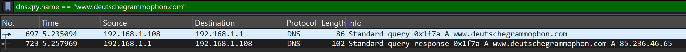
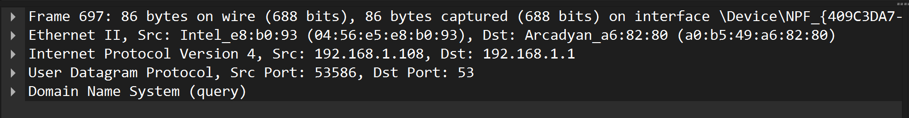

5 Monitoring Internet connections
The following explanations are based on the analysis of network packets recorded with Wireshark. This requires the installation of Wireshark. The Wireshark website provides the corresponding download.
Recording network packets
To record network packets, start Wireshark. The Wireshark start window looks like this:

Under the heading ‘Capture’, you can select the desired network adapter and start recording. The captured packets are displayed in real time and can be analysed later. At school, the connection to the Internet is established via WLAN. The WLAN adapter must be selected accordingly. Once the appropriate adapter has been selected, recording can be started. Recording is started by clicking on the blue shark fin icon in the toolbar. Recording starts immediately. Recording is paused by clicking on the red square icon in the toolbar. The recording can be saved either via the File > Save menu, by clicking on the file icon or by using the key combination Ctrl + S.
Monitoring DNS requests
Filtering the recording
To monitor DNS requests, any website is called up while Wireshark recording is running. This captures the corresponding DNS requests, which can then be analysed in Wireshark. After calling up the website, the recording can be paused and the captured packets analysed (if the recording continues, the packets in the display window continue to move).
To display the relevant data packets, the recorded data traffic can be filtered. The filter is entered in the input field for ‘Display filter’.

The corresponding filter for DNS queries to a given website is
The filter command used is relatively easy to understand. The first thing to note here is the protocol being filtered. Because the filtering is based on DNS queries, this is dns. dns alone would already be a valid filter. However, this would then display all DNS packets . The filter is therefore supplemented to dns.qry.name, where qry is short for query. The addition name stands for the domain name that is being queried. == is the logical operator used for filtering and means ‘is equal to’ in this case. The string being searched for is between the quotation marks. If the page was accessed exactly once during recording, the filter will display two packets: one DNS query and one DNS response. If the page was accessed multiple times during recording, the filter will display multiple packets.

The image shows the DNS query for www.deutschegrammaphon.com as the first packet and the corresponding response as the second packet.
Analysis of the filtered packets
For a detailed analysis of the communication, a single packet can be selected by clicking on it. This will display the packet in the lower area of Wireshark in detail and it can be examined more closely.

That it is the details of the selected packet that are shown in the image is evident from the matching packet number. The lines in the detail view correspond to the individual protocol header fields of the selected packet. This also reflects the TCP/IP layering model.
The detail view can be expanded by clicking on the triangles at the beginning of the individual protocol header fields. This will display further information about the respective fields. However, only the summaries of the header fields are explained here.
In this example, the content of the Internet layer header is explained first.
In the summary, the source and destination addresses of the IP packet are displayed. In this case, these are the private IP addresses 192.168.1.108 and 192.168.1.1. 192.168.1.108 is the source address, identifiable by the abbreviation “Src”, and 192.168.1.1 is the destination address, identifiable by the abbreviation “Dst”. Both devices are thus located in the same LAN. The computer with the IP address 192.168.1.1 is the router. This device establishes the Internet connection and can answer DNS queries from its cache.
In the header for the User Datagram Protocol (UDP), the source and destination ports are displayed.
The source port was automatically chosen as 53586, well above the so-called “Well-Known Ports” (0-1023). The “Well-Known Ports” are ports that are used by certain applications or services by default. Accordingly, the destination port was set to 53, as this is the default port for DNS queries. A list of “Well-Known Ports” can be found in the official IANA port database. The source port allows the destination system to send the response back to the correct sender.
NAT devices (see Section Network Address Translation (NAT)) use this port information for the mapping between private and public addresses.
The layer displayed at the bottom of the detail view contains the actual request for the translation of the domain name into an IP address.
Domain Name System (query)
Transaction ID: 0x1f7a
Flags: 0x0100 Standard query
Questions: 1
Answer RRs: 0
Authority RRs: 0
Additional RRs: 0
Queries
www.deutschegrammophon.com: type A, class IN
[Response In: 723]For this reason, this part of the analysis is also unfolded here. Under the keyword Queries, the requested address www.deutschegrammophon.com is displayed. The keyword type A indicates that this is a request for an IPv4 address. IPv4 addresses are designated with A, while IPv6 addresses are designated with AAAA. The last element in this line is the class of the request, in this case IN for the Internet. Although today almost exclusively the Internet is used as a network type, the field for the class (IN) is still part of every DNS request for historical reasons.
The corresponding content of the response looks as follows:
Domain Name System (response)
Transaction ID: 0x1f7a
Flags: 0x8180 Standard query response, No error
Questions: 1
Answer RRs: 1
Authority RRs: 0
Additional RRs: 0
Queries
www.deutschegrammophon.com: type A, class IN
Answers
www.deutschegrammophon.com: type A, class IN, addr 85.236.46.65The packet repeats the question and provides the answer from the DNS server. The domain name www.deutschegrammophon.com is associated with the IPv4 address 85.236.46.65.
This allows the connection to the website www.deutschegrammophon.com to be established.
Monitoring of the Connection Establishment
The connection establishment between the client (local computer) and the server (computer on the Internet) takes place in several steps, which are summarized in the so-called “Three-Way Handshake”. This process ensures that both sides are ready to send and receive data.
The following illustration shows a schematic representation of the “Three-Way Handshake”.

The client sends a SYN packet to the server to request a connection. The server responds with a SYN-ACK packet. This means it acknowledges the request with an ACK and inquires with a SYN whether the client is (still) ready to establish the connection. To make it clear that the ACK in the SYN-ACK packet refers to the original SYN packet, the individual packets are assigned a sequence number. The ACK returns the sequence number of the SYN packet plus one.
This process can be observed with Wireshark. For this, a combined Wireshark display filter is needed. As an example, the connection establishment between the local computer and the website of www.deutschegrammophon.com is considered. The first part of the filter should only display those packets that communicate with the IP address of the server of www.deutschegrammophon.com (85.236.46.65). This filter is
This sole filter, however, still shows too many packets.

To further narrow down the results, only those packets should be displayed that have either the SYN flag or the ACK flag (or both) set. This can be achieved with the following filter:
Still, this shows way too many packets. Therefore, only those packets should be displayed that are the responses to a SYN request. This can be achieved by right-clicking on a packet with the SYN flag and selecting the “Follow” > “TCP Stream” option. This will display the entire TCP stream in which this packet is located (the consecutive packets). The filter will be automatically adjusted.
The following listing shows the entire filter command for displaying the packets belonging to this TCP stream:

That the packets show the communication sequence of the Three-Way Handshake can be seen from the set flags. In the first step, the client sends a SYN packet, to which the server responds with a SYN-ACK packet. The client confirms this with an ACK packet. These three steps are visible in the Wireshark filter. The respective port numbers used in the TCP packets are clearly recognizable.
Following this “Three-Way Handshake”, the client can communicate with the server.